Assignment: Documenting the process from VM setup to hosting
Course: Cloud-based Application Development & Management
Suryansh Chandrakar | Section B2 | Roll No. 61
1
Install Ubuntu 24.04.3 LTS and Oracle Virtual Box and configure the VirtualBox.
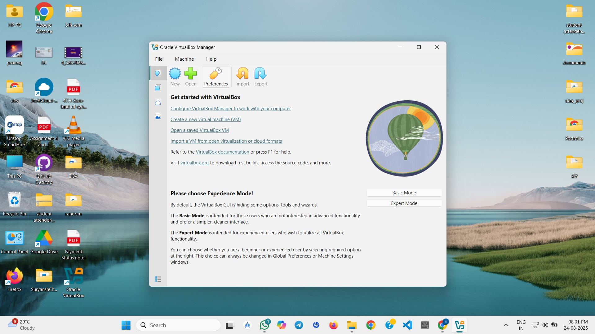
i.Setting up login credentials
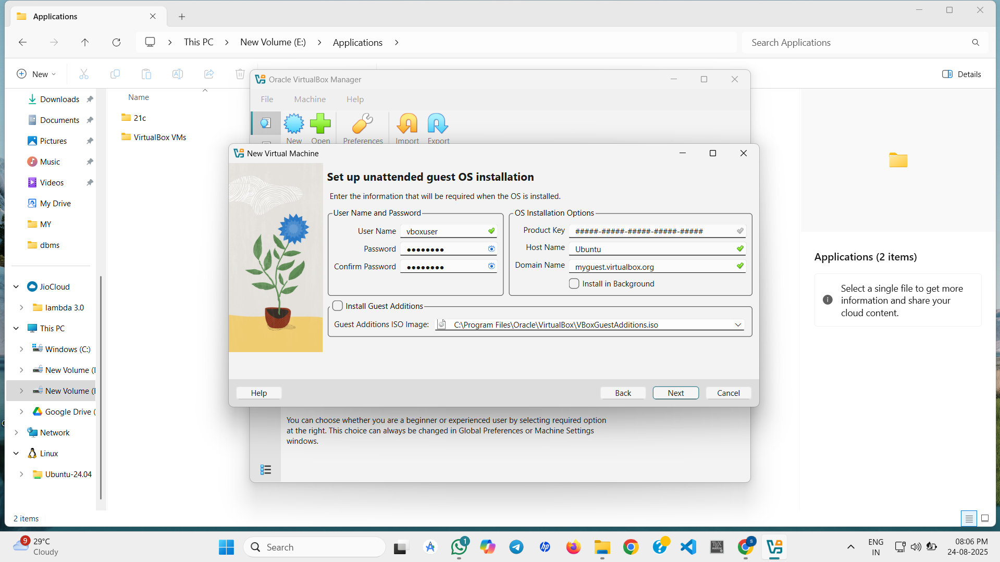
ii.Allocating Resources To VM
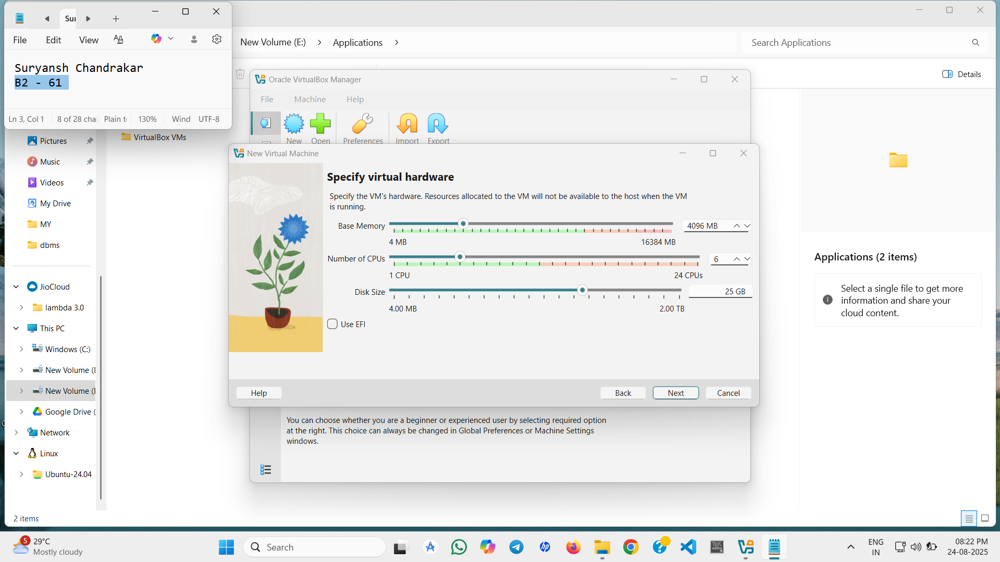
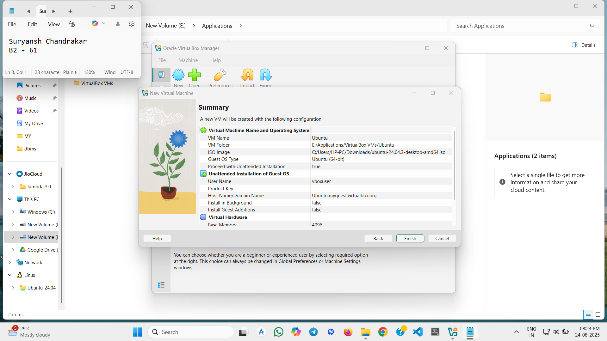
2
Create New Virtual Machine in Oracle VirtualBox using Ubuntu ISO File.
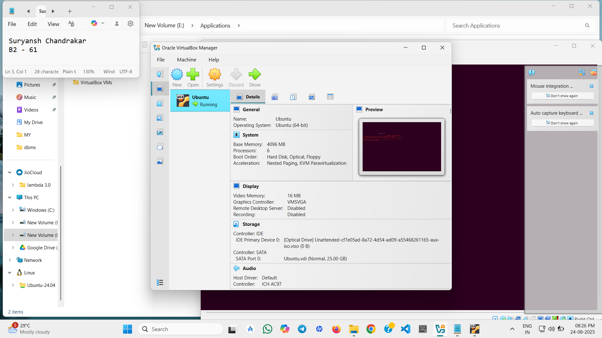
3
Open Ubuntu in VM ,install git and clone the code base from GitHub.
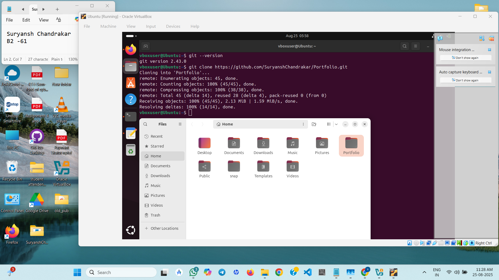
4
Configuring Network In VM Settings
Change "Attached to" from NAT to Bridge Adapter to Allow access from other devices on same network and to able to host online on any platform.
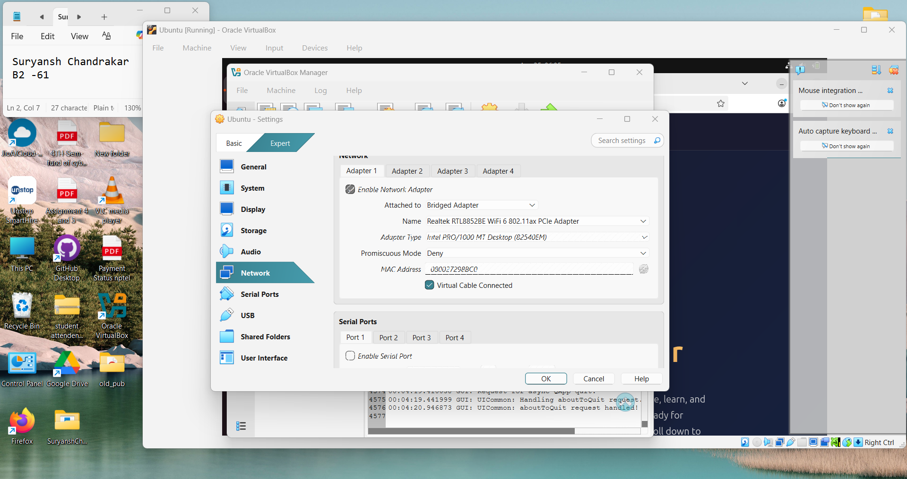
5
Locally Testing The Page Using Python HTTP Server.
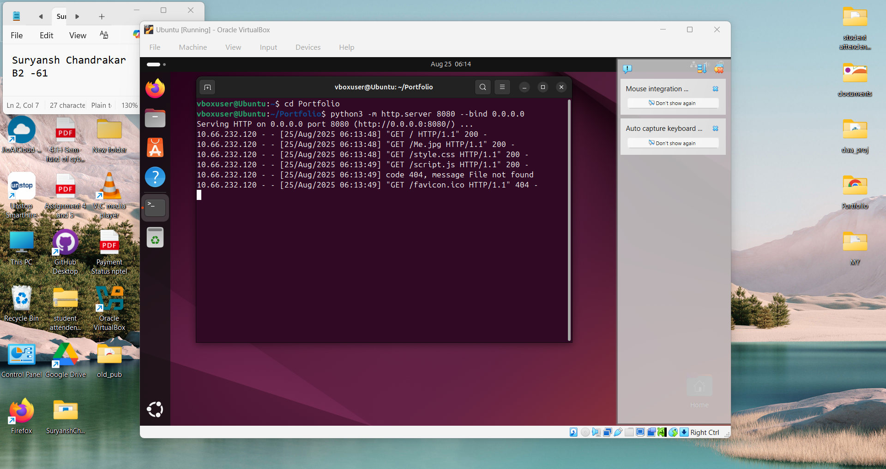
Page is visible across all devices(Desktop,Mobile etc.) on same network on http://10.66.232.163:8080
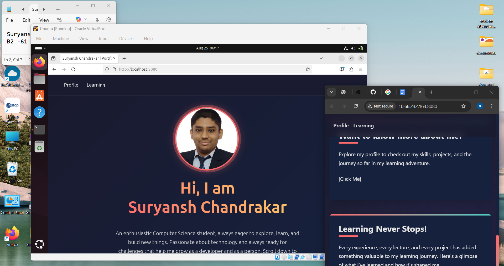
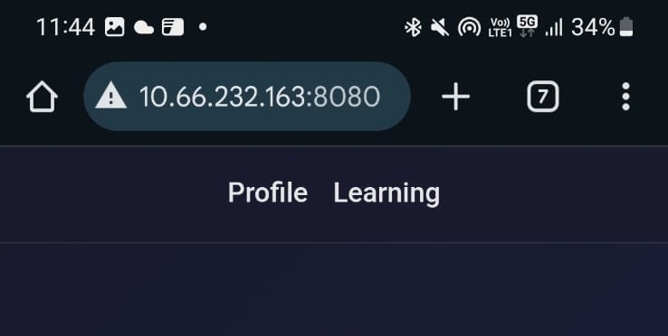
6
Install Node npm and Vercel To host the page Online.
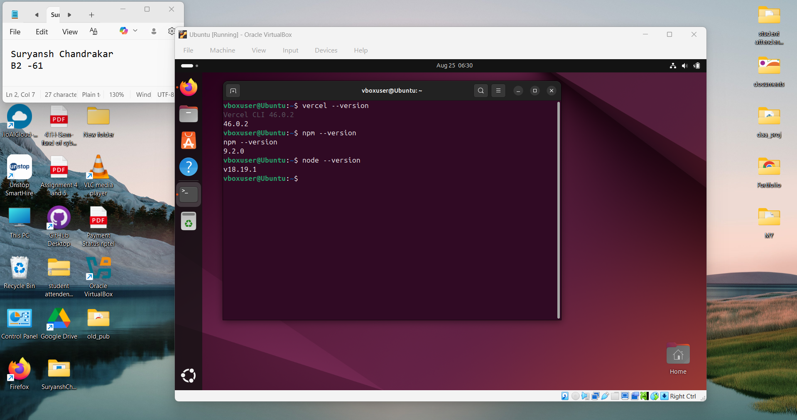
7
Authenticating and logging into Vercel from the Ubuntu terminal.
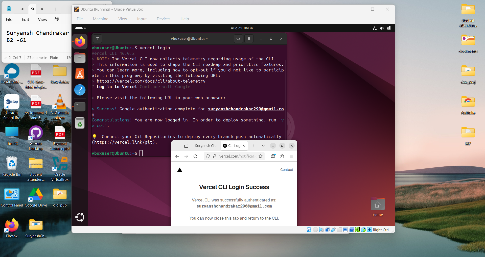
8
Setup project in vercel and deploy the Page from Ubuntu Terminal.
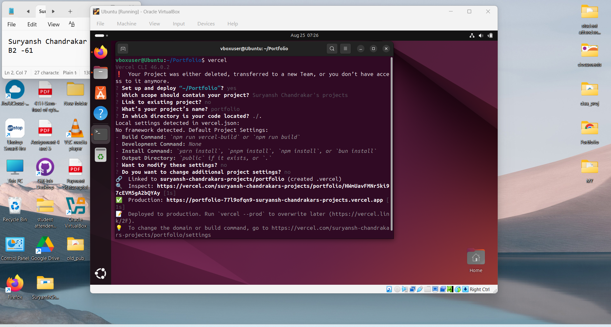
You can monitor manage and view everything about the hosted page directly from the project section in Versal Website .
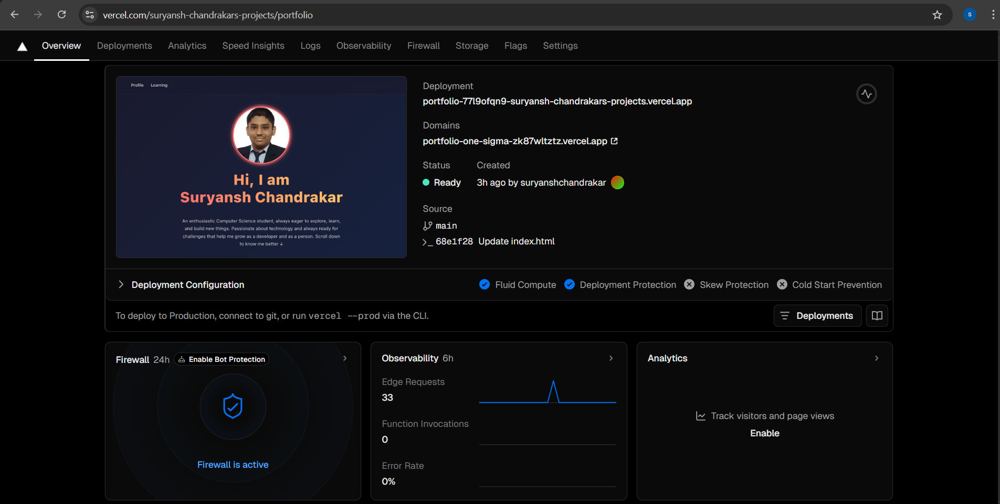